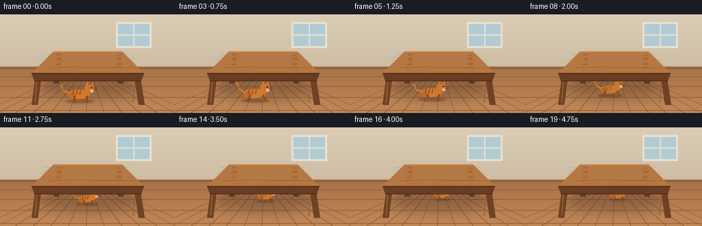
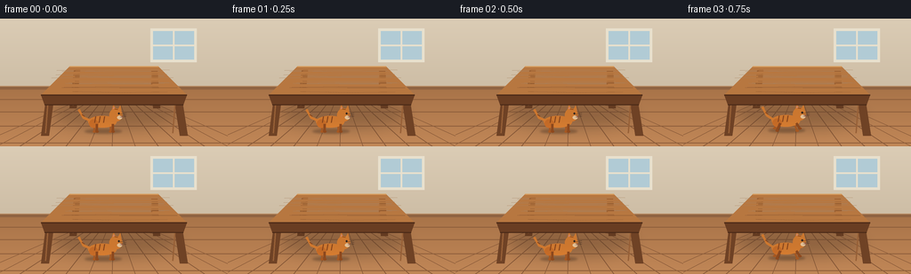

CODING AGENTS AS PIXEL WORLD MODELS
traex/Seed-2.1-Pro-0915 · dynamic_spatial_relationship_0018
点击播放 · 原生 RGB 像素
逐轮保存的候选
回放视频、检查图与代码变化。
每份候选均可单独播放。实际图片检查记录在下方工具轨迹中。
候选 01播放与检查图
点击播放 · 原生 RGB 像素


展开代码变化
--- 上一保存版本
+++ 本次保存版本
@@ -0,0 +1,287 @@
+from pathlib import Path
+import math
+
+import numpy as np
+from PIL import Image, ImageDraw, ImageFilter
+
+import artifact_io
+
+
+W, H = 256, 144
+N, FPS = 20, 4.0
+S = 4
+SW, SH = W * S, H * S
+
+
+def pt(x, y):
+ return (int(round(x * S)), int(round(y * S)))
+
+
+def box(x0, y0, x1, y1):
+ return [int(round(v * S)) for v in (x0, y0, x1, y1)]
+
+
+def width(v):
+ return max(1, int(round(v * S)))
+
+
+def make_background():
+ """Warm room with a perspective floor and a quiet back wall."""
+ img = Image.new("RGB", (SW, SH), (214, 198, 172))
+ draw = ImageDraw.Draw(img)
+
+ for y in range(80 * S):
+ t = y / (80 * S)
+ color = (
+ int(219 - 14 * t),
+ int(204 - 15 * t),
+ int(181 - 16 * t),
+ )
+ draw.line([(0, y), (SW, y)], fill=color)
+
+ # Window on the rear wall.
+ draw.rectangle(box(169, 11, 221, 49), fill=(232, 224, 205))
+ draw.rectangle(box(172, 14, 218, 46), fill=(177, 203, 213))
+ draw.line([pt(195, 14), pt(195, 46)], fill=(232, 224, 205), width=width(2))
+ draw.line([pt(172, 30), pt(218, 30)], fill=(232, 224, 205), width=width(2))
+
+ # Baseboard.
+ draw.rectangle(box(0, 76, W, 84), fill=(143, 99, 65))
+ draw.line([pt(0, 76), pt(W, 76)], fill=(188, 145, 105), width=width(1))
+
+ # Floor.
+ for y in range(80 * S, SH):
+ t = (y - 80 * S) / (SH - 80 * S)
+ color = (
+ int(169 + 24 * t),
+ int(116 + 19 * t),
+ int(73 + 14 * t),
+ )
+ draw.line([(0, y), (SW, y)], fill=color)
+
+ vanish = pt(128, 75)
+ for floor_x in range(-30, 291, 26):
+ draw.line([vanish, pt(floor_x, 144)], fill=(135, 88, 55), width=width(0.7))
+
+ for y in (91, 105, 121, 140):
+ draw.line([pt(0, y), pt(W, y)], fill=(143, 95, 60), width=width(1))
+
+ # Broad soft shadow cast beneath the table.
+ shadow = Image.new("L", (SW, SH), 0)
+ sd = ImageDraw.Draw(shadow)
+ sd.ellipse(box(55, 92, 205, 127), fill=92)
+ shadow = shadow.filter(ImageFilter.GaussianBlur(7 * S))
+ shade = Image.new("RGB", (SW, SH), (48, 34, 24))
+ img = Image.composite(shade, img, shadow.point(lambda v: int(v * 0.55)))
+ return img
+
+
+def draw_rear_legs(base):
+ img = base.copy()
+ d = ImageDraw.Draw(img)
+ legs = [
+ [(83, 58), (90, 58), (86, 101), (78, 101)],
+ [(170, 58), (177, 58), (180, 101), (172, 101)],
+ ]
+ for leg in legs:
+ d.polygon([pt(x, y) for x, y in leg], fill=(105, 61, 34))
+ d.line([pt(leg[0][0] + 1, 60), pt(leg[0][0] - 1, 98)],
+ fill=(137, 86, 49), width=width(1.2))
+ return img
+
+
+def make_front_table_layer():
+ layer = Image.new("RGBA", (SW, SH), (0, 0, 0, 0))
+ d = ImageDraw.Draw(layer)
+
+ # Front legs, drawn as tapered polygonal posts.
+ front_legs = [
+ [(52, 87), (61, 87), (55, 132), (46, 132)],
+ [(195, 87), (204, 87), (211, 132), (202, 132)],
+ ]
+ for leg in front_legs:
+ d.polygon([pt(x, y) for x, y in leg], fill=(111, 66, 37, 255))
+ d.line([pt(leg[0][0] + 2, 90), pt(leg[0][0] - 1, 129)],
+ fill=(151, 96, 55, 255), width=width(1.4))
+
+ top = [(78, 54), (178, 54), (210, 86), (46, 86)]
+ d.polygon([pt(x, y) for x, y in top], fill=(183, 119, 64, 255))
+
+ # Wooden apron immediately below the front edge.
+ apron = [(46, 86), (210, 86), (206, 97), (50, 97)]
+ d.polygon([pt(x, y) for x, y in apron], fill=(105, 61, 34, 255))
+
+ # Grain and edge highlights.
+ rng = np.random.default_rng(7)
+ for _ in range(16):
+ y0 = rng.uniform(58, 82)
+ x0 = rng.uniform(58, 88)
+ x1 = rng.uniform(168, 200)
+ wobble = rng.uniform(-1.4, 1.4)
+ points = [
+ pt(x0, y0),
+ pt((x0 + x1) / 2, y0 + wobble),
+ pt(x1, y0 + wobble * 0.5),
+ ]
+ d.line(points, fill=(139, 84, 43, 150), width=width(0.55))
+ d.line([pt(78, 54), pt(178, 54)], fill=(215, 157, 94, 255), width=width(1.2))
+ d.line([pt(46, 86), pt(210, 86)], fill=(80, 45, 25, 255), width=width(1.4))
+ d.line([pt(50, 97), pt(206, 97)], fill=(70, 39, 22, 255), width=width(1.0))
+ return layer
+
+
+def make_under_table_shade():
+ shade = Image.new("RGBA", (SW, SH), (0, 0, 0, 0))
+ mask = Image.new("L", (SW, SH), 0)
+ d = ImageDraw.Draw(mask)
+ d.ellipse(box(62, 84, 197, 119), fill=70)
+ mask = mask.filter(ImageFilter.GaussianBlur(5 * S))
+ shade.paste((43, 31, 23, 72), (0, 0), mask)
+ return shade
+
+
+def line(d, points, fill, w):
+ d.line([pt(x, y) for x, y in points], fill=fill, width=width(w), joint="curve")
+
+
+def draw_cat(canvas, cx, cy, scale, phase, energy):
+ d = ImageDraw.Draw(canvas)
+ s = scale
+ bob = abs(math.sin(phase * math.tau)) * 1.15 * s * energy
+ cy -= bob
+
+ # Contact shadow.
+ shadow = Image.new("RGBA", (SW, SH), (0, 0, 0, 0))
+ sd = ImageDraw.Draw(shadow)
+ sd.ellipse(
+ box(cx - 21 * s, cy + 8.5 * s, cx + 21 * s, cy + 13.5 * s),
+ fill=(38, 27, 20, 78),
+ )
+ shadow = shadow.filter(ImageFilter.GaussianBlur(1.2 * S))
+ canvas.alpha_composite(shadow)
+
+ orange = (217, 126, 49, 255)
+ dark_orange = (143, 73, 29, 255)
+ far_orange = (166, 88, 34, 255)
+ cream = (239, 203, 159, 255)
+ dark = (48, 35, 28, 255)
+
+ def leg(x_offset, phase_offset, far=False):
+ theta = phase * math.tau + phase_offset * math.tau
+ top_x = cx + x_offset * s
+ top_y = cy + 2.8 * s
+ swing = math.sin(theta) * 5.2 * s * energy
+ lift = max(0.0, math.cos(theta)) * 3.7 * s * energy
+ foot_x = top_x + swing
+ foot_y = cy + 11.2 * s - lift
+ col = far_orange if far else dark_orange
+ lw = 2.0 * s if far else 2.7 * s
+ line(d, [(top_x, top_y), (foot_x, foot_y)], col, lw)
+ d.ellipse(box(foot_x - 1.8 * s, foot_y - 1.2 * s,
+ foot_x + 2.2 * s, foot_y + 1.4 * s), fill=col)
+
+ # Far-side legs are partly hidden by the body.
+ leg(-10.2, 0.25, True)
+ leg(8.0, 0.75, True)
+
+ # Tail, with a gentle running sway.
+ sway = math.sin(phase * math.tau) * 2.0 * s * energy
+ tail_points = [
+ (cx - 15.5 * s, cy - 1.5 * s),
+ (cx - 22.5 * s, cy - 4.5 * s + sway),
+ (cx - 27.0 * s, cy - 12.5 * s + sway * 1.35),
+ ]
+ line(d, tail_points, orange, 2.8 * s)
+ d.ellipse(box(tail_points[-1][0] - 1.6 * s, tail_points[-1][1] - 1.6 * s,
+ tail_points[-1][0] + 1.6 * s, tail_points[-1][1] + 1.6 * s),
+ fill=orange)
+
+ # Body and haunch.
+ d.ellipse(box(cx - 17 * s, cy - 6.5 * s, cx + 15 * s, cy + 6.8 * s), fill=orange)
+ d.ellipse(box(cx - 16 * s, cy - 2.5 * s, cx - 5.5 * s, cy + 7 * s),
+ fill=(202, 109, 39, 255))
+
+ # Near-side legs.
+ leg(-7.2, 0.0)
+ leg(10.8, 0.5)
+
+ # Tabby markings.
+ for x_offset in (-8.5, -3.5, 1.5):
+ line(d,
+ [(cx + x_offset * s, cy - 5.7 * s),
+ (cx + (x_offset - 1.2) * s, cy + 1.2 * s)],
+ dark_orange, 1.25 * s)
+ line(d, [(cx - 24 * s, cy - 8 * s + sway),
+ (cx - 21 * s, cy - 6 * s + sway)], dark_orange, 1.0 * s)
+
+ # Head, ears, and face.
+ hx, hy = cx + 14.2 * s, cy - 7.4 * s
+ r = 7.4 * s
+ ear1 = [(hx - 5.2 * s, hy - 3.5 * s),
+ (hx - 2.6 * s, hy - 12.0 * s),
+ (hx + 0.7 * s, hy - 4.4 * s)]
+ ear2 = [(hx + 1.0 * s, hy - 4.4 * s),
+ (hx + 5.0 * s, hy - 11.0 * s),
+ (hx + 6.4 * s, hy - 3.2 * s)]
+ d.polygon([pt(x, y) for x, y in ear1], fill=orange)
+ d.polygon([pt(x, y) for x, y in ear2], fill=orange)
+ d.polygon([pt(hx - 3.6 * s, hy - 5.0 * s),
+ pt(hx - 2.5 * s, hy - 9.3 * s),
+ pt(hx - 1.1 * s, hy - 5.0 * s)],
+ fill=(214, 145, 145, 255))
+ d.ellipse(box(hx - r, hy - r, hx + r, hy + r), fill=orange)
+ d.ellipse(box(hx + 1.3 * s, hy + 0.7 * s, hx + 7.0 * s, hy + 5.0 * s), fill=cream)
+ d.ellipse(box(hx + 2.2 * s, hy - 2.8 * s, hx + 4.3 * s, hy - 0.7 * s), fill=dark)
+ d.polygon([pt(hx + 5.7 * s, hy + 1.7 * s),
+ pt(hx + 7.4 * s, hy + 1.7 * s),
+ pt(hx + 6.55 * s, hy + 3.0 * s)],
+ fill=(197, 102, 102, 255))
+
+ for dy in (-1.2, 0.8, 2.4):
+ line(d, [(hx + 4.8 * s, hy + dy * s),
+ (hx + 11.5 * s, hy + (dy - 1.1) * s)], dark, 0.45 * s)
+ line(d, [(hx - 1.5 * s, hy - 6.8 * s),
+ (hx + 2.0 * s, hy - 6.4 * s)], dark_orange, 1.0 * s)
+
+
+def smoothstep(value):
+ value = np.clip(value, 0.0, 1.0)
+ return value * value * (3.0 - 2.0 * value)
+
+
+def main():
+ case_dir = Path(__file__).resolve().parent
+ background = make_background().convert("RGBA")
+ rear_layer = draw_rear_legs(background).convert("RGBA")
+ front_layer = make_front_table_layer()
+ table_shade = make_under_table_shade()
+
+ frames = []
+ for i in range(N):
+ progress = smoothstep((i - 2.0) / 15.0)
+ cx = 116.0 + 17.0 * progress
+ cy = 116.0 - 17.0 * progress
+ scale = 1.0 - 0.38 * progress
+
+ if i < 3:
+ energy = 0.0
+ elif i < 17:
+ energy = 1.0
+ else:
+ energy = max(0.0, (19.0 - i) / 2.0)
+ phase = i * 0.21
+
+ frame = rear_layer.copy()
+ draw_cat(frame, cx, cy, scale, phase, energy)
+ frame.alpha_composite(table_shade)
+ frame.alpha_composite(front_layer)
+ frame = frame.convert("RGB").resize((W, H), Image.Resampling.LANCZOS)
+ frames.append(np.asarray(frame, dtype=np.uint8))
+
+ frames = np.stack(frames, axis=0)
+ artifact_io.save(frames, case_dir)
+ print(f"Saved {N} RGB frames ({W}x{H}) at {FPS} fps to {case_dir}")
+
+
+if __name__ == "__main__":
+ main()
可观测工具轨迹
实际执行的命令与返回图片。
命令 1exit 0
/bin/bash -lc 'cat prompt.txt GENERATION_RULES.md task_spec.json'
命令 2exit 0
/bin/bash -lc "ls -la && find . -maxdepth 2 -type f -not -path './.git/*' -print"
命令 3exit 0
/bin/bash -lc "python - <<'PY' import sys, importlib.util print(sys.version) for m in ['numpy','PIL','artifact_io']: print(m, importlib.util.find_spec(m)) PY"
命令 4exit 0
/bin/bash -lc "sed -n '1,240p' artifact_io.py && sed -n '1,220p' player_template.html"
命令 5exit 0
/bin/bash -lc 'python generate.py'
命令 6exit 0
/bin/bash -lc "find . -maxdepth 2 -type f -not -path './.git/*' -printf '%p %s\\n' | sort"
命令 7exit 0
/bin/bash -lc "python - <<'PY'
from PIL import Image
import numpy as np
from pathlib import Path
frames = np.stack([np.asarray(Image.open(Path('frames')/f'{i:02d}.png').convert('RGB')) for i in range(20)])
print('shape', frames.shape, 'dtype', frames.dtype)
print('per-frame mean RGB:')
for i, f in enumerate(frames):
print(i, f.mean(axis=(0,1)).round(1).tolist(), 'diff-from-prev', 0 if i==0 else round(np.abs(f.astype(int)-frames[i-1].astype(int)).mean(),2))
loaded = np.load('pixels.npz')['pixels']
print('npz shape', loaded.shape)
PY"保存候选 1 份；完成命令 7 次；可验证图片返回 0 张。原始 API 响应与完整日志保留在本地。